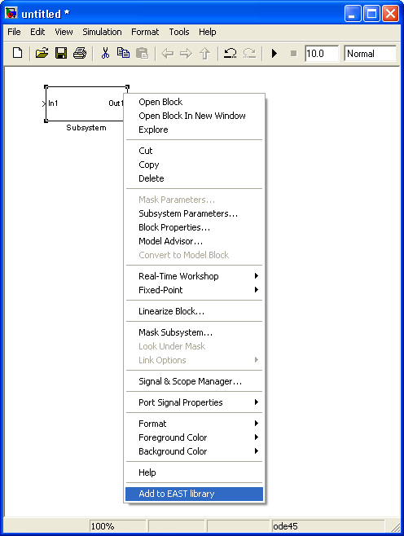

The Simulink <-> Ecore exchange plugin
Overview
This plugin generates Ecore files, based on a meta-model defined using the other
See the Using M-File
Reports for tools
that are useful when preparing a collection of M-files.
Back to Top
Quick start
If you are reading this file, you probably already have run the ecore_init.m file. This must be done every time you start MATLAB and want to use Ecore exchange, so you should consider putting it into your startup.m file.
The FunctionTypes library
The exchange mechanism uses the library mechanism of MATLAB/Simulink.
Procedure for Adding
Your Own Toolbox to the Start Button

To accompany the following instructions, an example file is
provided that adds the SpecSim (Example) Toolbox to the Start
button.
Use the example startinfo.xml file as a basis for
creating an info.xml file for your own toolbox.
-
Copy the example file matlabroot/help/techdoc/matlab_env/examples/startinfo.xml
to
a directory for which you have write access.
-
In that directory, rename startinfo.xml
to info.xml.
-
Add the directory containing the info.xml
file
to the search path for MATLAB.
-
To see what the
example info.xml file
does, perform these steps:
-
Select Start
> Desktop Tools > View
Start Button
Configuration Files.
The Start Button Configuration Files dialog box opens.
Click Refresh
Start Button Perform this step whenever you want to see
changes to info.xml files reflected in the Start
button.

-
In the desktop, view the item in the Start
button.
For the example, select Start > Toolboxes
> SpecSim (Example).

-
In the Start Button Configuration Files dialog box, select
the info.xml file you want to edit. In this
example,
select SpecSim (Example) Toolbox. Click the Open
button.
The info.xml file for the selected
product
opens in the Editor.
-
In the Editor,
change the entries in the info.xml file so they
pertain to your toolbox. For details, see the sample code and table
shown after the last step.
The schema for the info.xml file is
at matlabroot/sys/namespace/info/v1/info.xsd.
Consult the schema if you need more information about the info.xml
file
structure.
-
In the Editor,
select File > Save to
save the changes.
-
To see the
results of the changes to the info.xml file,
in the Start Button Configuration Files dialog box click Refresh
Start Button, and the view the Start
button.
MATLAB automatically validates your info.xml
file
against the schema. If there is an invalid construct, MATLAB displays
an error in the Command Window.
Use the message in the error to isolate the problem or use
any
validator. One validator you can use is from the W3C®
at http://www.w3.org/2001/03/webdata/xsv.
Description of
info.xml File for Adding Your Own Toolbox to
the Start Button
This is the example file provided with MATLAB.

This table provides details about the example info.xml
file.
|
Line
|
XML Tag
|
Value for Example
|
Notes
|
|
6
|
<matlabrelease>
|
R2008b
|
Release of MATLAB. Not currently used.
|
|
7
|
<name>
|
SpecSim
(Example)
|
Name of the toolbox.
|
|
8
|
<type>
|
toolbox
|
The product type. Allowable values are matlab,
simulink,
toolbox, blockset, links_targets,
other.
This determines where the entry appears in the Start
button. SpecSim
(Example) appears under Start > Toolboxes.
Within a type,
entries are shown in alphabetical order.
|
|
9
|
<icon>
|
$docroot/techdoc/matlab_env/examples/specsimicon.gif
|
Shows an icon for your toolbox. You can specify a
relative
path, that is, relative to the location of the info.xml
file.
In this example, specsimicon.gif is located in
the examples directory provided with the
documentation.
|
|
10
|
<help_location>
|
None |
Location of HTML help files you provide for the toolbox.
For details, see Adding
HTML Help Files for Your Own Toolbox. Specify a
relative path, that is, relative to the location of the info.xml
file.
In this example, there are no help files, so the entry has no value.
|
|
12
to 15
|
<list>
<listitem>
<label>
|
SpecSim
Viewer (Example GUI)
|
Name of a tool in your toolbox. You must have at least
one list-listitem-label set of tags for the
toolbox
to appear in the Start button.
|
|
16
|
<callback>
|
specsim_viewer_example
|
This is the function that runs when you select the item
from the Start button. You must have at
least one callback for the toolbox to appear in
the Start button. In this example, specsim_viewer_example
is
a function that starts the SpecSim Viewer GUI when you select Start
> Toolboxes > SpecSim
(Example) > SpecSim Viewer
(Example GUI). (This example file is not
actually provided.)
|
|
17
|
<icon>
|
$docroot/techdoc/matlab_env/examples/guiicon.gif
|
Shows an icon for your callback.
You
can specify a relative path, that is, relative to the location of
the info.xml file. In this example, guiicon.gif
is
located in the examples directory provided with
the documentation.
|
|
21
|
<label>
|
Demos
(SpecSim Example)
|
For examples you provide with the toolbox.
|
|
22
|
<callback>
|
specsim_demos_example
|
This is the function that runs when you select the item
from the Start button. In this example, specsim_demos_example
is
an example that runs when you select Start >
Toolboxes > SpecSim (Example)
> Demos (SpecSim Example). (This
example file is not actually provided.)
|
|
23
|
<icon>
|
$docroot/techdoc/matlab_env/examples/demoicon.gif
|
Shows an icon for your demos. You can specify a relative
path, that is, relative to the location of the info.xml
file.
In this example, demoimicon.gif is located in the
examples directory
provided with the documentation.
|
|
27
|
<label>
|
Web
Site (SpecSim Example)
|
For a link to your toolbox Web site.
|
|
28
|
<callback>
|
web
web http://www.specsimexample.com
-browser;
|
This is the statement that runs when you select the item
from the Start button. In this example,
it displays the Web site for the SpecSim (Example) Toolbox in the
system browser. when hen you select Start > Toolboxes
> SpecSim (Example) > Web
Site (SpecSim Example).
(This URL is intentionally invalid.)
|
|
30
to 34
|
</listitem>
</list>
</productinfo>
|
None
|
Designates end of list and productinfo
entries
in the Start button for the toolbox.
|
Back to Top
Adding HTML Help
Files for Your Own Toolbox
Overview of
Providing HTML Help Files for Your Own Toolbox
If you offer a collection of files for use with MATLAB and
related products (referred to here as a toolbox) to other users, you
can provide HTML help files for your toolbox and provide access to
them from the MATLAB Help browser. This form of help can supplement
the M-file help you provide for functions you create, allowing you
to include figures, illustrations, screen captures and equations.
For background information about the Help browser and other forms
of help supported by MATLAB, see Help
and Related Resources .
You can use the MATLAB Editor or any tool to create your
HTML help files. To use syntax highlighting and indenting features
for HTML and related files in the Editor, select File
> Preferences > Editor/Debugger
> Language, and choose HTML.
To view an HTML help file you created in a browser in MATLAB,
use the web
function. For example,
to display my_help_file in the MATLAB Web
browser, run
web('I:\my_matlab_files\my_help_file.html')
Using the web function with the -helpbrowser
options
displays the HTML page in the Help browser:
web('fullpath/filename.html', '-helpbrowser')
You
can include a link to the HTML help for a function within the M-file
help for the function. M-files provided with MATLAB include such
a link to the HTML reference page for the function. To create this
link in the M-file help, use a matlabcolon
(matlab:)
statement in conjunction with the web statement.
The doc function does not
support
user-created HTML files.
You can add the HTML help files for your own toolbox, as well
as provide a search database for the help files so that you and others
can access the HTML help from the Help browser using the contents
listing and search features. For details, see Adding HTML Help Files for Your
Own Toolbox to the Help Browser and Creating a Searchable Database.
Adding HTML Help
Files for Your Own Toolbox to the Help Browser
MATLAB determines what information to display in the Help
browser using info.xml files that reside on the
search path or in the current directory. You create an info.xml
file
for your toolbox, which includes a pointer to your HTML help files.
You provide the info.xml to users, along
with the other help files for your toolbox. With the info.xml
file
on their search path or in their current directory, users can access
your HTML help files from the Help browser Contents
pane.
If you also want your toolbox to appear on the Start
button,
put the Help browser and Start button information
into a single info.xml file (see Adding Your Own Toolboxes to
the Start Button).
To accompany the following instructions, example files are
provided
that add HTML help files for the SpecSim (Example) Toolbox to the
Help browser. This example assumes you want to add HTML help files
to the Help browser, but do not want to add any entries for the help
files on the Start button. Use the example helpinfo.xml
file
as a basis for creating an info.xml file to add
HTML help files for your own toolbox.
-
Follow these steps to create the info.xml
file:
-
Choose a directory for which you have write access
and add it to the search path. (The directory cannot be the current
directory when you add it to the path). For this example, create specsim_example.
-
Copy matlabroot/help/techdoc/matlab_env/examples/helpinfo.xml
to
the directory you just created (for the example, copy to specsim_example).
-
Rename specsim_example/helpinfo.xml
to info.xml.
-
Follow these steps to establish the Help contents listing
and HTML files in a valid location:
-
In the directory containing your newly-created info.xml
file,
create a subdirectory for your help files. For the example, in specsim_example,
create a directory called specsim_example_helpfiles.
-
Copy matlabroot/help/techdoc/matlab_env/examples/helptoc.xml
to
the directory you just created. For the example, copy helptoc.xml
to specsim_example_helpfiles.
-
Put your HTML help files in the same directory. For
the example, copy the set of specsim_..._example.html files
from matlabroot/help/techdoc/matlab_env/examples
to specsim_example_helpfiles.
-
To see the example HTML help files in the Help browser
perform these steps:
-
Select Start > Desktop
Tools > View Start Button
Configuration Files.
-
In the resulting Start Button Configuration Files
dialog box, click Refresh Start Button. This
refreshes info.xml files for MATLAB.
-
Open the Help browser to see the entries for the
SpecSim
(Example) Toolbox. Be sure to disable the product filter, or select
the SpecSim (Example) Toolbox in the product
filter
if the product filter is enabled. Use Preferences
> Help to access the product
filter.

-
In the Editor, open and modify the info.xml
and helptoc.xml files
for your toolbox. Save the files. For the example, the files are specsim_example/info.xml
and specsim_example/specsim_example_helpfiles/helptoc.xml.
You can also include:
-
A helpindex.xml file to provide
entries for your toolbox in the Help browser Index
pane.
-
A helpsearch directory and
search
database files, allowing users to include the content of your toolbox
HTML help files when they perform searches using the Help browser.
For details, see Description
of info.xml File for Adding HTML Help Files for
Your Toolbox.
-
Refresh the Help browser by selecting Start
> Desktop Tools > View
Start Button Configuration Files, and then click Refresh
Start Button
in the dialog box.
Description of
info.xml File for Adding HTML Help Files for
Your Toolbox
Content of
the info.xml File. The content of the info.xml
file adds the
HTML help files to the Help browser. This is the content of the info.xml
file
for the SpecSim (Example) Toolbox, with an explanation of each entry
in the following table:
<productinfo
xmlns:xsi="http://www.w3.org/2001/XMLSchema-instance"
xsi:noNamespaceSchemaLocation="optional">
<?xml-stylesheet type="text/xsl" href="optional"?>
<matlabrelease>R2008b</matlabrelease>
<name>SpecSim (Example)</name>
<type>toolbox</type>
<icon></icon>
<help_location>specsim_example_helpfiles</help_location>
</productinfo>
|
XML Tag
|
Description
|
Value in Example
|
Notes
|
|
<matlabrelease>
|
Release of
MATLAB.
|
14
|
Not currently used.
|
|
<name>
|
Title of toolbox
|
SpecSim
(Example)
|
The name of your toolbox as it will appear in the Help
browser Contents pane.
|
|
<type>
|
Determines
where the toolbox is located
in the Help browserContents pane, appends a type
to the entry, and assigns a colored book icon.
|
toolbox
|
Types are presented in the order shown here: matlab,
toolbox, simulink, blockset,
links_targets, other.
Within a type, items are presented alphabetically. For the example,
SpecSim (Example) Toolbox will appear with other toolboxes and with
an orange book icon, which is the standard for toolboxes.
|
|
<icon>
|
Icon for help for your toolbox in the Start
button.
|
None
|
Use an icon for your help files. In this example, the Start
button
is not used. See also the <list>
entry, below.
|
|
<help_location>
|
Location of help files
|
specsim_example_helpfiles
|
Location of helptoc.xml and HTML
help
files you provide for your toolbox. Specify a relative path, that
is, relative to the location of the info.xml
file.
If you provide HTML help files for multiple toolboxes, each directory
name must be unique.
|
|
<list>
<listitem>
...
|
Entries for Start button
|
None
|
If you also want your toolbox to appear in the Start
button,
add at least one listitem. For details, see Adding Your Own Toolboxes to
the Start Button.
|
Help Files
for <help_location> in the info.xml
File. Put
these help files into the directory you specified
for help_location in the info.xml
file:
|
Filename
|
Required
or Optional
|
Description
|
|
helptoc.xml
|
Required
|
The file the Help browser displays hierarchical entries
in the Contents pane for your toolbox. It
references
your HTML help files. A helptoc.xml file is
provided
for the example, which illustrates the structure. If you include icons,
provide them in a directory within matlabroot/help
and
specify their pathname using $help/..., as shown
in the example. You can also use $toolbox /... to
reference icons in a matlabroot/toolbox
directory;
see matlabroot/toolbox/matlab/icons
for
icons provided with MATLAB. You can also specify a full path.
|
|
helpindex.xml
|
Optional
|
Provides entries for the Index pane
in the Help browser. View the helpindex.xml file
for any MathWorks product you installed to see how
you can create a similar file for your own toolbox. The top-level
entries in the helpindex.xml file must be in
case-sensitive
alphabetical order .
|
|
helpsearch directory containing
search
database files
|
Optional
|
Allows the content of your HTML help files to be
included
in Help browser searches, providing entries for the Search
Results in the Help browser. For details on creating this
directory and its contents, see Creating
a Searchable Database.
|
|
HTML help files
|
Required
|
HTML files containing the help for your toolbox. At
least
one of these is referenced by helptoc.xml.
|
More
Examples of info.xml Files. For additional examples, see the info.xml
files
for MathWorks products:
-
Select Start > Desktop
Tools > View Start Button
Configuration Files files.
-
From the resulting Start Button Configuration Files
dialog box, select a product.
-
Click Open to view its info.xml
file.
Creating a
Searchable Database
The builddocsearchdb
function
creates a searchable database that allows you to search HTML help
files you created, and to display the search results in the Search
Results tab of the Help browser. This example assumes you
have created an info.xml file for the SpecSim
(Example)
files, and that the help_location for the SpecSim
(Example) files is I:\my_matlab_files\specsim_example_helpfiles.
-
Create an info.xml that has a valid
entry for <help_location>, which
contains
HTML files. Add to the search path the directory containing the info.xml
file.
(Do not add it when the directory is the current directory.)
-
Create a searchable database by running builddocsearchdb('full_path
to_help_location'). For the example, run
builddocsearchdb ('I:\my_matlab_files\specsim_example\specsim_example_helpfiles')
This
creates a directory named helpsearch in help_location_dir_name
(for
the example, I:\my_matlab_files\specsim_example_helpfiles),
and creates three files in helpsearch that are
used when searching the documentation. MATLAB creates the deletable
and segments filenames
each time you run builddocsearchdb. The name
of the third file varies, but always uses the cfs
extension.
-
From File > Preferences
> Help, set the product filter to search
only your toolbox.
Use the Search for: field in the Help browser
to search for any words in the HTML help files you provided in help_location_dir_name.
This example shows a search of SpecSim HTML help files for the term specsim
gui.

Back to Top
Adding Demos for
Your Own Toolboxes
About Adding Demos
for Your Own Toolboxes
If you offer a collection of files for use with MATLAB and
related products (referred to here as a toolbox) to other users, you
can include demo files for your toolbox and provide access to them
from the MATLAB Help browser Demos pane.
(For background information about demos, see Viewing
and Running Demos.)
You can include demos and related files of any file type. The
cell-publishing feature, available in the Editor, provides a convenient
way to create demos as files that run in MATLAB and also display
as HTML files. For more information, see Overview
of Publishing M-Files.
MATLAB determines what demos to display in the Help browser
using demos.xml files that reside on the search
path or in the current directory. To add demos for your toolbox, you
create a demos.xml file that includes pointers
to your demo files. You provide the demos.xml
file
to users, along with the demos files for your toolbox. With the files
on their search path, users can access your demos from the Help browser
Demos pane
or by using the demo
function
with the full path to a demo type.
You can also put your toolbox on the Start
button—see Adding Your
Own Toolboxes to the Start Button).
Procedure for Adding
Demos for Your Own Toolboxes
To accompany the following instructions, an example demos.xml
file
is provided that adds demos for the SpecSim (Example) Toolbox to the
Help browser. Use the example file as a basis for creating a demos.xml
file
to add demos for your own toolbox.
-
Copy matlabroot/help/techdoc/matlab_env/examples/demos.xml
to
a directory for which you have write access and add it to the search
path. This example uses I:/my_matlab_files.
-
To see how the demos.xml file looks
in the Help browser, open the Help browser and click the Demos
tab
to see the entries for the SpecSim (Example) Toolbox under Toolboxes.
Be sure to disable the product filter, or select the SpecSim
(Example) Toolbox in the product filter if the product
filter
is enabled. Use Preferences > Help
to access the product
filter.
-
In the Editor,
open I:/my_matlab_files/demos.xml

-
Modify the demos.xml
file
for your toolbox.
The root tag is <demos>
and it includes <name>, <type>,
<icon>and <description>
for
your toolbox demos.
Add a <demoitem> or <demosection>
containing <demoitem> s,
where each <demoitem> is for a demo.
Within one demos.xml file, every <demoitem>
must
either be a direct child of <demos>,
or all
must all be within <demosection>
tags. That
is, you cannot have a <demoitem> as
a child
of <demos> and another demoitem
in demosection.
Save the demos.xml file.
|
Line
|
XML Tag
|
Value for Example
|
Notes
|
| 2 |
<demos>
|
No value
|
The root element for a demos.xml
file.
|
| 4 |
<name>
|
SpecSim
(Example) Toolbox
|
Name of your toolbox.
|
| 5 |
<type>
|
toolbox
|
The product type. Allowable values are matlab,
simulink, toolbox,
blockset, links_targets,
other.
This determines where your entry appears in the Demos
pane.
Setting this to toolbox makes SpecSim
(Example) Toolbox appear in Demos
> Toolboxes. Within a type,
entries are displayed in alphabetical order.
|
|
6
|
<icon>
|
$toolbox/matlab/icons/matlabicon.gif
|
Use an icon for your demo. You can specify a
relative
path, that is, relative to the location of the info.xml
file.
This example uses $toolbox /... to reference
icons
in a matlabroot/toolbox
directory;
see matlabroot/toolbox/matlab/icons
for
icons provided with MATLAB.
|
|
7
|
<description>
|
SpecSim
(Example) Toolbox is ... |
The description that appears in the Help browser
display
pane, on the main page for your demo. To show
|
|
11 and 12
|
<website>
<a href=
"url"</a>
</website>
|
http://www.mathworks.com/access/helpdesk/help/techdoc/matlab_env/Docroot.html">
For more information, see...
|
Links to a Web site. For example, MATLAB and related
product demos include this link near the top, on the right: Product
page at mathworks.com. This tag can appear anywhere before
the </demos> tag. For the example,
displays
this help page at The MathWorks Web site.
|
|
14
|
<demosection>
|
No value
|
Begins a section of individual demos: <label>,
<description>,
and <demoitem> for each demo you
want in
the section.
|
|
15
|
<label>
|
SpecSim
(Example) Functions
|
Title shown for a <demosection>
or <demoitem>.
For <demoitem>, <label>
is
required.
|
|
16
|
<demoitem>
|
|
Contains<label>
and <callback>, and/or <file>
.
One <demoitem> per demo.
|
|
17
|
<label>
|
SpecSim
function1 demo (example)...
|
Title shown for demoitem.
|
|
None
|
<type>
|
Not shown
|
The type of demo. This causes the icon for that type
to appear with the demo in the list of demos for your toolbox.
Allowable
values are: M-file, model, M-GUI,
video,
or other. Note that if you include <type>,
MATLAB does
not automatically create headers in the demo pages.
|
|
18
|
<callback>
|
demoone (file not actually
provide,
only an example)
|
The callback runs when you double-click the demo
icon
or click the title text for the demo item in the display pane.
|
|
22
|
<file>
|
html/demotwo.html
|
The HTML file displays in the Help browser when you
click
the demo in the list. Specify a relative path from the location of demos.xml.
|
|
None
|
<dependency>
|
Not shown
|
Optional. Specifies other products, such as another
toolbox,
required to run the demo. The text must match a product name specified
in an info.xml file on the search path or in the
current directory.
|
-
In the Help
browser, right-click in
the list of demos and from the context menu, select Refresh
to
be sure the Help browser is including the changes to your demos.xml
file.
Your demos should now appear in the Demos pane.
For additional examples, look at other demos.xml
files
for MathWorks products.
Back to Top
Validation Errors
for info.xml Files
When
MATLAB finds an info.xml file
on the search path or in the current directory, it assumes the file
is intended to add information to the Start button
or the Help browser, and automatically validates the file against
the supported schema. If there is an invalid construct in the info.xml
file, MATLAB displays
an error in the Command Window. The error is typically of the form
XML-file failed validation against schema located in
...
XML-file name: full path to...\info.xml
and might appear when you start MATLAB, press the Start
button,
or in other situations.
These are some reasons why you might see the XML file
validation
error and what you should do as a result:
Outdated info.xml
File for MATLAB Product
If you have an info.xml file from an old
version of MATLAB, it might contain constructs that are no longer
valid. In these cases, the full path to the info.xml
file
usually indicates an old version of MATLAB, for example, ...\MATLAB\R14\...
.
In this case, the error is not actually causing any problems and you
could safely ignore it. To ensure the error does not occur, move or
remove the offending info.xml file, assuming you
no longer use that version of MATLAB. If you do use it, remove
the directory from the search path and do not make it the current
directory in the new version of MATLAB.
info.xml File
Unrelated to MATLAB Product
If the info.xml exists for reasons other
than adding information to the Start button or
Help browser, the validation MATLAB attempts to perform is irrelevant.
In this case, the error is not actually causing any problems and you
could safely ignore it. To ensure the error does not occur, one option
is to rename the offending info.xml file.
Another option is to move the offending info.xml
file
to a directory that is not on the search path and is unlikely to be
used as the current directory in MATLAB.
info.xml File
Intended for Use with MATLAB Software Contains
Invalid Constructs
If the info.xml file is intended for
adding
information to the Start button or Help browser,
you need to correct the reported problem. Use the message in the error
to isolate the problem or use any validator. One validator you can
use is from the W3C at http://www.w3.org/2001/03/webdata/xsv.
The schema for the info.xml file for MATLAB is
at matlabroot/sys/namespace/info/v1/info.xsd.
Consult the schema if you need more information about the structure
of your info.xml file.
Back to Top